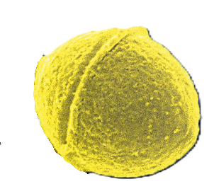
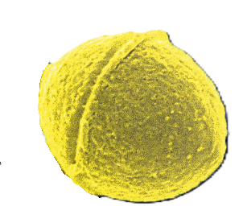

Descripción microbiológica
Streptococcus pyogenes (Grupo A de Lancefield) es un coco grampositivo de 0.6-1.0 µm de diámetro, que se agrupa en cadenas o pares. Carece de cápsula en la mayoría de cepas, pero presenta una pared celular con ácido lipoteicoico y proteína M (principal factor de virulencia). Es aerobio facultativo, catalasa-negativo y beta-hemolítico (hemólisis completa en agar sangre). Las colonias son pequeñas (1-2 mm), translúcidas y no pigmentadas tras 24-48 horas a 37°C. Produce biofilm mediante la proteína F y ácido hialurónico.
Características distintivas
- Tinción: Gram-positivo en cadenas, no esporulado, no móvil.
- Metabolismo: Fermenta glucosa sin gas, hidroliza hipurato (prueba de PYR positiva).
- Resistencias: Sensible a penicilina (no hay cepas resistentes reportadas).
- Factores de virulencia: >50 proteínas (proteína M, estreptolisinas, exotoxinas pirogénicas).
Ecología y transmisión
Coloniza el 5-20% de la población en faringe, piel y ano. Sobrevive semanas en superficies húmedas, pero es sensible a la desecación. Se transmite por gotículas respiratorias, contacto directo con lesiones cutáneas o fómites. Causa infecciones comunitarias (faringitis, impétigo) y brotes en escuelas/guarderías. Factores de riesgo incluyen hacinamiento, heridas abiertas y inmunosupresión.
Factores ambientales
- Supervivencia: Hasta 30 días en polvo o secreciones secas, sensible a >60°C.
- pH óptimo: 7.4, pero tolera rangos de 6.0-7.8.
- Biocidas: Sensible a hipoclorito (0.1%), glutaraldehído y peróxido de hidrógeno.
Mecanismos de patogenicidad
Su virulencia depende de factores de superficie y toxinas:
| Factor | Mecanismo | Efecto clínico |
|---|---|---|
| Proteína M | Inhibe fagocitosis | Invasión tisular |
| Estreptolisina O | Lisis de eritrocitos | Daño inflamatorio |
| Exotoxinas SPE-A/B | Superantígenos | Fiebre escarlata |
Enfermedades clínicas
- Infecciones supurativas: Faringitis estreptocócica (40% de faringitis en niños), impétigo, celulitis.
- Infecciones invasivas: Fascitis necrotizante, síndrome de shock tóxico estreptocócico (STSS).
- Secuelas no supurativas: Fiebre reumática (por mimetismo molecular), glomerulonefritis aguda.
Diagnóstico y tratamiento
Métodos diagnósticos incluyen:
- Prueba rápida de antígeno (faringe) o tinción de Gram (muestras de tejido).
- Cultivo en agar sangre (beta-hemólisis) + pruebas bioquímicas (PYR, bacitracina).
- Serología (ASLO) para infecciones pasadas.
Opciones terapéuticas:
- Primera línea: Penicilina G o amoxicilina (ninguna resistencia reportada).
- Alérgicos: Eritromicina, clindamicina (resistencia variable).
- Infecciones graves: Penicilina + clindamicina (para reducir producción de toxinas).
Prevención y control
- Higiene: Cubrir tos, evitar compartir utensilios, lavado de heridas.
- Profilaxis: Penicilina benzatínica en pacientes con historia de fiebre reumática.
- Vacunas: En investigación (basadas en proteína M o péptidos conservados).
Datos epidemiológicos
- Causa ~700 millones de faringitis/año mundialmente (15-30% en niños, 5-10% en adultos).
- Infecciones invasivas tienen mortalidad del 20-60% en fascitis necrotizante.
- Responsable de >500,000 muertes anuales por secuelas (fiebre reumática).